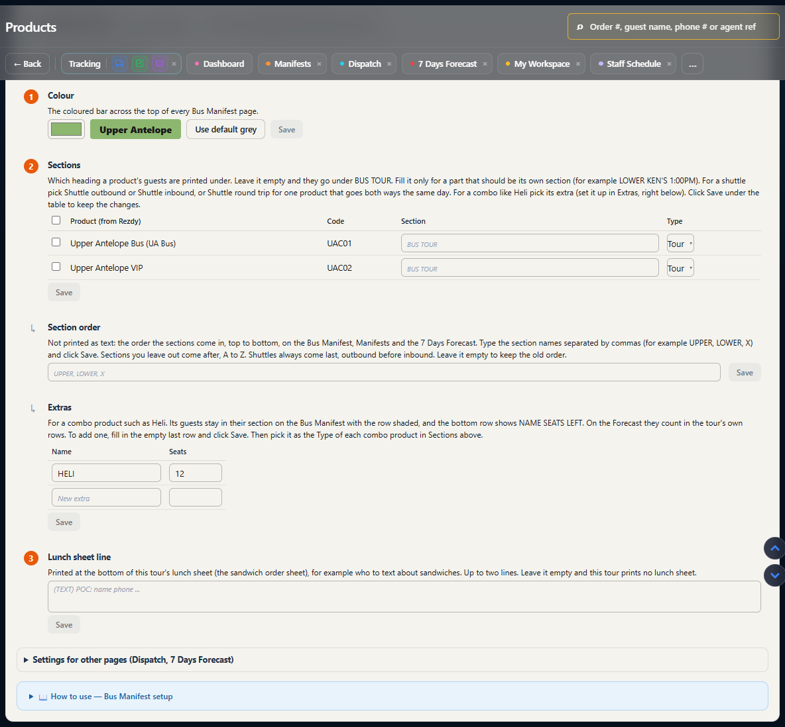
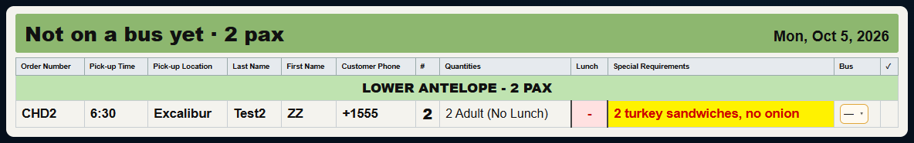
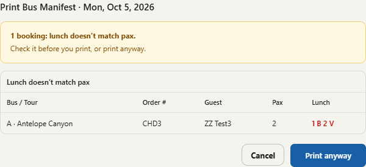
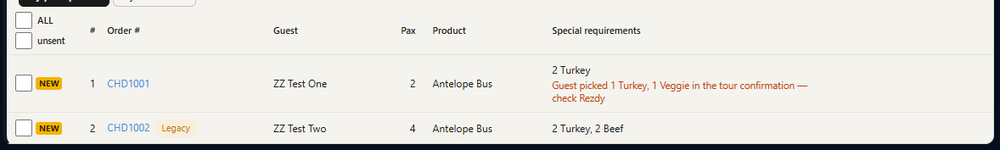

<title>G333 Lunch by Tour</title>
<meta name="claude:viewport-fit-sides" content="cover">
<style>
/* 布局：一条竖排的阅读页；每块「现在（真截图）」在左、「改后（样稿）」在右，窄屏上下叠。 */
:root{
  --bg:#f3f1ec; --paper:#fbfaf7; --ink:#1a1a1a; --mute:#5b6270; --line:#d9d5cc;
  --accent:#2f5d8a; --red:#c00000; --redbg:#fdeceb; --orange:#c2410c; --yellow:#fff200; --green:#2f7d4f; --q:#fff6d6; --qline:#e6cf7a;
  --f-body:"Inter","Segoe UI","Microsoft YaHei",system-ui,sans-serif; --f-head:"Space Grotesk","Inter","Microsoft YaHei",sans-serif;
}
@media (prefers-color-scheme:dark){:root:not([data-theme="light"]){--bg:#14181e;--paper:#1c222a;--ink:#e8e6e1;--mute:#a3aab5;--line:#333b46;--accent:#8db8e3;--red:#ff7b7b;--redbg:#3a2224;--orange:#fb9a5b;--yellow:#5c5600;--green:#6fcf97;--q:#2d2814;--qline:#6b5a22;color-scheme:dark}}
:root[data-theme="dark"]{--bg:#14181e;--paper:#1c222a;--ink:#e8e6e1;--mute:#a3aab5;--line:#333b46;--accent:#8db8e3;--red:#ff7b7b;--redbg:#3a2224;--orange:#fb9a5b;--yellow:#5c5600;--green:#6fcf97;--q:#2d2814;--qline:#6b5a22;color-scheme:dark}
body{background:var(--bg);color:var(--ink);font-family:var(--f-body);line-height:1.65;padding-block:28px 60px;padding-left:max(16px,env(safe-area-inset-left,0px));padding-right:max(16px,env(safe-area-inset-right,0px))}
main{max-width:1180px;margin:0 auto;display:grid;gap:34px}
h1,h2,h3{font-family:var(--f-head);text-wrap:balance;margin:0}
h1{font-size:1.8rem} h2{font-size:1.3rem;border-bottom:1px solid var(--line);padding-bottom:6px} h3{font-size:1rem}
p{margin:0} .mute{color:var(--mute)} code{font-size:.86em;background:var(--paper);border:1px solid var(--line);border-radius:4px;padding:0 4px;overflow-wrap:anywhere}
section{display:grid;gap:14px}
.pair{display:grid;grid-template-columns:minmax(0,1fr) minmax(0,1fr);gap:16px}
@media (max-width:860px){.pair{grid-template-columns:minmax(0,1fr)}}
.col{display:grid;gap:8px;align-content:start;min-width:0}
.tag{font-size:.72rem;letter-spacing:.08em;text-transform:uppercase;font-weight:700;color:var(--mute)}
.tag.new{color:var(--accent)}
.shot{border:1px solid var(--line);border-radius:8px;overflow:auto;background:#fff}
.shot img{display:block;max-width:none;width:100%}
ul.facts{margin:0;padding-left:1.2em;display:grid;gap:4px;font-size:.92rem}
.q{background:var(--q);border:1px solid var(--qline);border-radius:10px;padding:14px 16px;display:grid;gap:8px}
.q h3{font-size:1.02rem}
.q ol{margin:0;padding-left:1.3em;display:grid;gap:4px}
.rec{font-weight:700}
table.flow{border-collapse:collapse;width:100%;font-size:.88rem}
.flowwrap{overflow-x:auto}
table.flow th,table.flow td{border:1px solid var(--line);padding:6px 8px;text-align:left;vertical-align:top}
table.flow th{background:var(--paper)}
/* —— 样稿：照 ops 的白卡片 —— */
.mock{background:#f4f2ee;color:#1a1a1a;border:1px solid var(--line);border-radius:8px;padding:12px;font-size:12.5px;overflow-x:auto;line-height:1.5}
.mock .fld{display:grid;grid-template-columns:22px 1fr;gap:6px 10px;margin-bottom:12px}
.mock .num{width:20px;height:20px;border-radius:50%;background:#e8590c;color:#fff;font-weight:700;font-size:11px;display:grid;place-items:center}
.mock .num.sub{background:none;color:#888}
.mock b.t{font-size:13px}
.mock .hint{color:#333}
.mock .ring{box-shadow:0 0 0 2px #f59e0b;border-radius:3px}
.mock .btn{display:inline-block;border:1px solid #cfcac0;background:#ece9e2;border-radius:6px;padding:2px 10px;color:#777}
.mock .btn.blue{background:#3b82f6;border-color:#3b82f6;color:#fff}
.mock .ok{color:#15803d;font-weight:600}
.mock .grey{color:#6b7280}
.mock table{border-collapse:collapse;min-width:640px;width:100%}
.mock td,.mock th{border:1px solid #c8ced2;padding:3px 7px;text-align:left;white-space:nowrap}
.mock th{background:#e8ebef;font-size:11px}
.mock .bm td{font-size:14px;font-weight:600}
.mock .redtxt{color:#d00000;background:#fff200;white-space:normal;min-width:220px}
.mock .why{display:block;color:#c00000;font-size:11.5px;font-weight:600;line-height:1.25}
.mock .lunchbad{background:#ffe1e1;color:#c00000;text-align:center}
.mock tr.redrow td{background:#fdeceb}
.mock .orange{display:block;color:#c2410c;font-size:11.5px}
.mock .yellowbox{background:#fff8e1;border:1px solid #f0d58c;border-radius:8px;padding:8px 10px;margin-bottom:10px;color:#6b4e00}
.mock .chk{display:inline-flex;gap:6px;align-items:center;font-weight:600}
.mock .tipbox{display:inline-block;background:#222;color:#fff;font-size:11px;border-radius:4px;padding:3px 7px;margin-top:4px;white-space:normal}
</style>

<main>
<header style="display:grid;gap:8px">
  <p class="tag">G333 · preview v1 · 给 Annie · 2026-11-27 · e2</p>
  <h1>Lunch by tour：前端要改的 4 处</h1>
  <p>后端 75 已上线（main 82f9fec8）：含不含餐按团定；shuttle 节、票型写 No Lunch 的都不带餐；不带餐的单如果客人在 Special Requirements 写了三明治，字标红、写原因、份数不算。下面每处左边是 <b>ops 现在的样子</b>（ops 真页面截图，模拟数据，都是 ZZ Test），右边是 <b>改后样稿</b>。左边的数据已经是 G333 的情况（CHD2 买的是 No Lunch 票、写了 2 份火鸡三明治）。</p>
  <p class="mute">后端算好的数（LUNCH 合计、午餐单、TOTAL SANDWICH、Lunch 格「-」）不用前端改，已经对。11-27 已先修一个小 bug：Bus Manifest 红字悬停原来写「Sandwiches could not be read」，现在用后端给的原因（main 8b3779a6，样子不变）。</p>
</header>

<section>
  <h2>① Products › Bus Manifest setup：每个团一个「Includes lunch」勾</h2>
  <ul class="facts">
    <li>现在：ops 的 setup 没有这个勾（components/products/manifest-setup-panel.tsx，字段依次是 Colour 1068、Sections 1101、Section order 1328、Extras 1390、Lunch vendor 1476 / Lunch sheet line 1500）。旧后台 _manifest_setup_panel.html 已经加了，放在团的设置行里，勾了马上存。</li>
    <li>生产上已设好：South Rim、Antelope、BZ = 勾上；其他团 = 没勾。后端读 <code>groups[].includes_lunch</code>（true / false / null），存 <code>PUT …/groups/{id}/includes-lunch</code>，只有 admin 能存。</li>
    <li>null（这个设置从没存过）时显示没勾，旁边灰字 “Not set yet: lunch still follows the ticket and product name.”——生产上已经存过，实际看不到这句。</li>
    <li>位置：放在 Lunch vendor 上面，编号跟着 Lunch（③），都是管餐的。</li>
  </ul>
  <div class="pair">
    <div class="col"><p class="tag">现在（ops 截图）</p><div class="shot"></div></div>
    <div class="col"><p class="tag new">改后（样稿，按推荐 Q1 = B 先选后存）</p>
      <div class="mock">
        <div class="fld"><span class="num">1</span><div><b class="t">Colour</b><div class="grey">… 不变 …</div></div></div>
        <div class="fld"><span class="num">2</span><div><b class="t">Sections</b> · Section order · Extras<div class="grey">… 不变 …</div></div></div>
        <div class="fld"><span class="num">3</span><div>
          <b class="t">Includes lunch</b>
          <div class="hint">Tick it for a tour that includes lunch (for example Antelope Canyon, South Rim, Bryce &amp; Zion). Guests in its tour sections then count in LUNCH and get a sandwich on the lunch sheet. Shuttle sections and tickets that say No Lunch get no lunch. Leave it unticked for a tour without lunch (West Rim, Hoover Dam).</div>
          <div style="margin-top:6px;display:flex;gap:10px;align-items:center;flex-wrap:wrap"><label class="chk"><input type="checkbox" checked> Includes lunch</label> <span class="btn">Save</span> <span class="ok">Saved</span></div>
          <div style="margin-top:8px" class="grey">勾 / 取消后（没按 Save）：</div>
          <div style="display:flex;gap:10px;align-items:center;flex-wrap:wrap"><label class="chk ring"><input type="checkbox"> Includes lunch</label> <span class="btn blue">Save</span></div>
          <div style="margin-top:8px" class="grey">从没存过（null）：</div>
          <div style="display:flex;gap:10px;align-items:center;flex-wrap:wrap"><label class="chk"><input type="checkbox"> Includes lunch</label> <span class="grey">Not set yet: lunch still follows the ticket and product name.</span></div>
        </div></div>
        <div class="fld"><span class="num sub">↳</span><div><b class="t">Lunch vendor</b><div class="grey">… 不变 …</div></div></div>
      </div>
    </div>
  </div>
</section>

<section>
  <h2>② Bus Manifest（Dispatch › Bus Manifest）：不带餐却写了三明治的客人</h2>
  <ul class="facts">
    <li>现在（components/dispatch-manifest/manifest-view.tsx）：后端 82f9fec8 起这类客人的 Special Requirements 已经是红字原文（NotesCell，2500 行一带）、Lunch 格「-」浅红（LunchCell 2557）；悬停原因 11-27 已修。原因只在悬停里，手机上看不到。</li>
    <li>改后：红字下面加一行小红字写原因（同 G364 橙字那一行的位置），只在屏幕上；View only、打印、Excel 不出（同 G364）。悬停照旧也有。看 Q2。</li>
    <li>打印时红字原文本身印不印红：未核（这次不改）。</li>
  </ul>
  <div class="pair">
    <div class="col"><p class="tag">现在（ops 截图，悬停才看到原因）</p><div class="shot"></div></div>
    <div class="col"><p class="tag new">改后（样稿，按推荐 Q2 = B）</p>
      <div class="mock"><table class="bm"><tr><th>Order Number</th><th>#</th><th>Quantities</th><th>Lunch</th><th>Special Requirements</th></tr>
      <tr><td>CHD2</td><td>2</td><td>2 Adult (No Lunch)</td><td class="lunchbad">-</td><td class="redtxt">2 turkey sandwiches, no onion<span class="why">Booked without lunch, but Special requirements ask for 2 T. Check the order.</span></td></tr></table></div>
    </div>
  </div>
</section>

<section>
  <h2>③ Bus Manifest 打印 / 下载前的提醒框</h2>
  <ul class="facts">
    <li>现在（components/dispatch-manifest/lunch-mismatch-dialog.tsx）：后端把这类单也放进 <code>lunch_mismatch_orders</code>，所以已经会弹框，但标题写 “lunch doesn’t match pax”，Lunch 栏只写「-」，看不出为什么。Bus Manifest 页上没有「发送」，只有打印、下载两处用这个框（manifest-view.tsx 1547、1589）。</li>
    <li>改后：有原因（<code>reason</code>）的单，在那一行 Lunch 栏下面加一行小红字原因；黄框里多一句 “or sandwiches on a booking without lunch”。没有原因的（真的份数不对）照旧。</li>
  </ul>
  <div class="pair">
    <div class="col"><p class="tag">现在（ops 截图，模拟数据里 A 车只有一单份数不对）</p><div class="shot"></div></div>
    <div class="col"><p class="tag new">改后（样稿）</p>
      <div class="mock">
        <div class="yellowbox"><b>2 bookings: lunch doesn’t match pax, or sandwiches on a booking without lunch.</b><br>Check them before you print, or print anyway.</div>
        <table><tr><th>Bus / Tour</th><th>Order #</th><th>Guest</th><th>Pax</th><th>Lunch</th></tr>
        <tr><td>A · Antelope Canyon</td><td>CHD3</td><td>ZZ Test3</td><td>2</td><td style="color:#c00000;font-weight:600">1 B 2 V</td></tr>
        <tr><td>A · Antelope Canyon</td><td>CHD2</td><td>ZZ Test2</td><td>2</td><td style="color:#c00000;font-weight:600;white-space:normal">-<span class="why" style="font-weight:500">Booked without lunch, but Special requirements ask for 2 T. Check the order.</span></td></tr></table>
        <div style="text-align:right;margin-top:10px"><span class="btn" style="color:#222">Cancel</span> <span class="btn blue">Print anyway</span></div>
      </div>
    </div>
  </div>
</section>

<section>
  <h2>④ Manifests › Bus Tour（Main Manifest）：整行淡红 + 原因</h2>
  <ul class="facts">
    <li>现在（components/manifests/manifests-view.tsx）：后端已在行上给 <code>lunch_no_booked</code> / <code>lunch_note</code>，ops 还没读，这类单看起来跟普通单一样。G364 的橙字「Guest picked …」在 Special requirements 原文下面（Cell，2554 一带）。</li>
    <li>改后（照 Annie 11-20「这个订单在main manifest里标红，并在餐上写原因」）：整行淡红（用现成的 #fdeceb，同没填 Cfm # 的门票行），Special requirements 原文下面一行红字原因，位置同 G364 橙字；两种都有时红字在上、橙字在下。Special requirements 这一列关了就只剩整行淡红，悬停行看原因。</li>
    <li>合作方（partner）看的 Main Manifest 后端不给这两个键，不会出。</li>
  </ul>
  <div class="pair">
    <div class="col"><p class="tag">现在（ops 截图）</p><div class="shot"></div></div>
    <div class="col"><p class="tag new">改后（样稿）</p>
      <div class="mock"><table><tr><th>#</th><th>Order #</th><th>Guest</th><th>Pax</th><th>Product</th><th>Special requirements</th></tr>
      <tr><td>1</td><td style="color:#378ADD">CHD1001</td><td>ZZ Test One</td><td>2</td><td>Antelope Bus</td><td style="white-space:normal">2 Turkey<span class="orange">Guest picked 1 Turkey, 1 Veggie in the tour confirmation — check Rezdy</span></td></tr>
      <tr class="redrow"><td>2</td><td style="color:#378ADD">CHD1003</td><td>ZZ Test Three</td><td>2</td><td>West Rim Bus</td><td style="white-space:normal">2 Turkey sandwiches<span class="why" style="font-weight:500">Booked without lunch, but Special requirements ask for 2 T. Check the order.</span></td></tr></table></div>
    </div>
  </div>
</section>

<section>
  <h2>⑤ How to use 的新句子（后端 75 原文，英文）</h2>
  <ul class="facts">
    <li><b>Bus Manifest setup</b>（加一条）：“Includes lunch: tick it for a tour that includes lunch (for example Antelope Canyon, South Rim, Bryce &amp; Zion). <i>[Q1 选 A：It saves right away and Saved shows next to it. / 选 B：Click Save to keep it.]</i> Guests in its tour sections then count in LUNCH, get a sandwich on the lunch sheet (Turkey if they wrote none) and show on the driver and guide lunch. Shuttle sections and tickets that say No Lunch get no lunch. Leave it unticked for a tour without lunch (West Rim, Hoover Dam). Meal and Grab and Go tickets on West Rim are still counted in their own boxes at the bottom of the Bus Manifest.”</li>
    <li><b>Bus Manifest</b>（加一条）：“Red text can also mean the guest wrote sandwiches but has no lunch (a tour without lunch, a shuttle, or a No Lunch ticket). <i>[Q2 选 A：Point at the red text to see the reason. / 选 B：The reason is under the red text.]</i> Those sandwiches are not counted and are not on the lunch sheet. Check the order.”</li>
    <li><b>Main Manifest</b>（加一条）：“A light red row with a red reason under Special requirements means the guest wrote sandwiches but has no lunch (a tour without lunch, a shuttle, or a No Lunch ticket). Those sandwiches are not counted. Check the order.”</li>
  </ul>
</section>

<section>
  <h2>数据从哪来、到哪去</h2>
  <div class="flowwrap"><table class="flow">
    <tr><th>数据</th><th>从哪来</th><th>到哪去</th></tr>
    <tr><td>团含不含餐（Includes lunch）</td><td>admin 在 Products › Bus Manifest setup 勾 → 后端 settings 表 <code>manifest_lunch_tours</code>（团 id 名单）</td><td>后端 <code>has_lunch()</code>：Bus Manifest 页脚 LUNCH、午餐单 / TOTAL SANDWICH、餐厅通知、司机 / 导游的餐、Main Manifest 的标记</td></tr>
    <tr><td>节是 Tour 还是 Shuttle</td><td>同一页 Sections 表的 Type（已有）</td><td>shuttle 节一律不带餐</td></tr>
    <tr><td>票型 No Lunch</td><td>Rezdy 订单的 Quantities → Order List → Main Manifest → Bus Manifest 名单（已有流向）</td><td>写着 No Lunch 的一律不带餐</td></tr>
    <tr><td>客人写的三明治</td><td>Rezdy Special Requirements → Main Manifest 同步过来（已有）</td><td>带餐的：算份数；不带餐的：不算，标红 + 原因</td></tr>
    <tr><td>原因一句（英文）</td><td>后端 <code>no_lunch_note()</code> 生成：Bus Manifest 客人 <code>lunch_note</code>、提醒框 <code>lunch_mismatch_orders[].reason</code>、Main Manifest 行 <code>lunch_note</code></td><td>①–④ 只显示，不存、不印</td></tr>
  </table></div>
  <p class="mute">导游在导游页改过这位客人的餐 = 已经跟客人确认过，后端不再标红（guide_override）。</p>
</section>

<section>
  <h2>📌 要 Annie 定的</h2>
  <div class="q">
    <h3>Q1　Products › Bus Manifest setup 的「Includes lunch」勾：勾了马上存，还是先选后存？</h3>
    <p><b>现在：</b>ops 还没有这个勾。旧后台（_manifest_setup_panel.html）勾了马上存、旁边出 Saved；后端 75 也写成「It saves right away」。但我们 11-19 定的规矩是「新功能里的开关 / 勾选也先选后存」（你原话：「是的，我们现在的网站上全都都用先选后存的模式来设计了」），这页别的设置也都是改了变橙、按 Save 才存。</p>
    <ol>
      <li><b>A 勾了马上存</b>：同旧后台；点一下就生效，旁边绿字 Saved，存不进去红字、勾退回去。跟这页别的设置不一样。</li>
      <li><b>B 先选后存</b>（推荐）：勾 / 取消后框变橙，旁边蓝色 Save，按了才存、绿字 Saved；没存就换团或离开页面会先问。跟这页别的设置一样，也照 11-19 的规矩。How to use 那句改成 “Click Save to keep it.”</li>
    </ol>
    <p class="rec">推荐 B（11-19 规矩：新开关一律先选后存）。</p>
  </div>
  <div class="q">
    <h3>Q2　Bus Manifest 上「不带餐却写了三明治」的原因：只在悬停里，还是红字下面直接写出来？</h3>
    <p><b>现在：</b>红字原文已经出了，原因只在鼠标悬停里（旧后台 tour_manifest.html 也是悬停；ops 11-27 已改成悬停显示这句原因）。手机、平板没有悬停，看不到原因。你 11-26 说的是「要把字体标红，写上原因」。</p>
    <ol>
      <li><b>A 只悬停</b>：同旧后台，表格不变高。手机上看不到原因。</li>
      <li><b>B 红字下面一行小红字写原因</b>（推荐）：位置同 G364 的橙字那一行；只在屏幕上，View only、打印、Excel 不出；悬停也照旧有。</li>
    </ol>
    <p class="rec">推荐 B（照你的「写上原因」，手机上也看得到）。</p>
  </div>
  <p class="mute">③ 提醒框加原因、④ Main Manifest 整行淡红 + 原因，照你 11-20 / 11-26 的原话和后端 75 的定稿做，不另出题；有不同意见直接说。</p>
</section>
</main>
